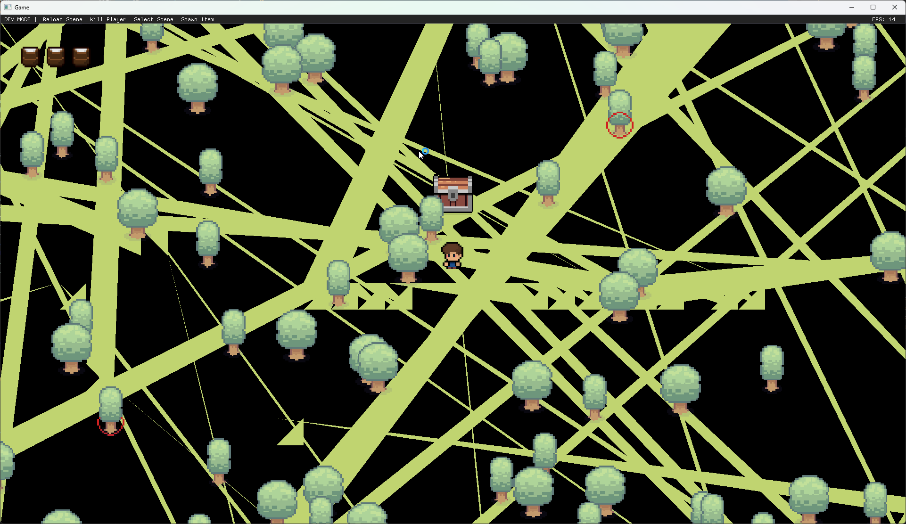

Introduction
Arcon2D is a 2D Multiplayer Engine that a friend and I have been working on for a while now. It is a custom engine that is built from the ground up.
It is a 2D engine that is built on top of GLFW and OpenGL.
So why did we make this engine? Well, I wanted to learn how to make a game engine. I have always been interested in game engines and how they work. So we thought we would give it a go and see what we can learn.
The projects
In Acorn there are three projects that are important to understand. The first is the Engine project, which contains the engine code. The second is the TestGame project, which contains the game code. The third is the Acorn project, which contains the editor.
The Engine project is a C++ project that contains the engine code (duh). It is a static library that is linked to the TestGame project that means that the engine code is compiled into the game executable.
Tracey
Tracey is a C++ profiler that was amazing to set up. It is a header only library that is very easy to use. It has a very simple API and it is very fast.
The part that got me excited is that you can use it from the website if you have a saved profiling session meaning you can test it against older versions of your code to see if you made an improvementI managed to use it to improve performance up to 2000fps along the way managed to pick up some awesome screnshots 
Aixlog
Aixlog is a C++ logging library that is very easy to use. It has a very simple API and it is very fast.
Log::init(
{
std::make_shared(Severity::trace, "%H:%M.%S [#severity] [#file | Function: #function | Line: #line] #message"),
std::make_unique(Severity::trace, "latest.log", "%H:%M.%S [#severity] [#file | Function: #function | Line: #line] #message"),
std::make_shared(gameTitle, Severity::error)
}); This is what the example looks like
22:10.36 [Info] [Game.cpp | Function: InitializeInternal | Line: 35] Logging Initialized.
22:10.36 [Info] [Game.cpp | Function: InitializeInternal | Line: 37] Engine Initializing.
22:10.36 [Info] [Renderer.cpp | Function: Initialize | Line: 33] Renderer Initialized.
22:11.42 [Warning] [SceneManager.cpp | Function: DestroyAllPendingGameObjects | Line: 296] GameObject is still referenced after being destroyed | 2 | class std::shared_ptr | Ignore this unless there is loads of them.
Lua
So you might be going hold on a minute; why lua? and honestly it was something I just wanted to try out. I had used lua before however never implemented it into a game engine.
I used sol2 which is a C++ to lua api to make it easier than writing raw lua api calls to make functions.
This is some of the example code that I used within the base addon that I had to spawn people and pick them up
local function leftButtonUp()
isPickingSomeoneUp = false
for key, gameObjectData in pairs(gameObjects) do
local gameObject = gameObjectData.obj
local isPickedUp = gameObjectData.isPickedUp
if (gameObject == null or not gameObject:IsValid() or not isPickedUp) then
goto continue_end
end
local spriteComponent = gameObject:GetSpriteComponent()
if (spriteComponent == null) then
goto continue_end
end
spriteComponent:SetPivot(Vector2(0.5, 0.5))
spriteComponent:SetColor(Vector4(1, 1, 1, 1))
spriteComponent:SetTexture("Player_Idle_1")
spriteComponent:SetSortingLayer("Test")
gameObjectData.isPickedUp = false
::continue_end::
end
end
hook.Add("OnMouseButtonUp", "OnMouseButtonUp", function(isLeftButton)
if (isLeftButton) then
leftButtonUp()
end
end)
hook.Add("OnSceneChanged", "OnSceneChanged", function()
for key in pairs(gameObjects) do
gameObjects[key] = null;
end
end)This is a video of what the code does, there is more code however you get the idea.
Protobufs
Protobufs are a way to serialize data in a way that is very fast and very small. It is a binary format that is very fast to read and write. It is also very small, which is great for network traffic.
It is a bit of a pain to set up however once you have it set up it is very easy to use. You just need to create a .proto file and then run the protoc compiler on it. It will generate C++ code that you can use to serialize and deserialize the data.
syntax = "proto3";
package engine;
import "google/protobuf/any.proto";
enum MessageType
{
TYPE_INVALID = 0;
TYPE_JOIN_REQUEST = 1;
TYPE_JOIN_REQUEST_REJECTED = 2;
TYPE_CHANGE_SCENE = 3;
TYPE_CONNECTION_INFO_REQUEST = 4;
TYPE_CONNECTION_INFO = 5;
TYPE_LOCAL_PLAYER_INFO = 6;
TYPE_PLAYER_INFO = 7;
TYPE_CREATE_GAMEOBJECT = 8;
TYPE_GAME = 9;
}
message NetMessage
{
optional MessageType msg_type = 1;
optional google.protobuf.Any msg_data = 2;
}
message CS_JoinRequest {} // has no data? maybe password or something or mod list
message SV_ConnectionInfoRequest {} // has no data?
message CS_ConnectionInfo
{
optional string steamKey = 1;
}
message SV_JoinRequestRejected
{
optional string reason = 1;
}
message SV_ChangeScene
{
optional uint64 sceneId = 1;
}
message DisconnectedMessage
{
optional int32 client_id = 1; // ID of person that connected
optional string reason = 2; // Reason for disconnection
}
message SV_LocalPlayerInfo
{
optional int32 localPlayerId = 1;
repeated SV_PlayerInfo players = 2;
}
message SV_PlayerInfo
{
optional int32 playerId = 1;
}
message NetMessages
{
message NetMessage_t
{
optional int32 tick = 1;
optional NetMessage msg = 2;
}
repeated NetMessages.NetMessage_t usermsgs = 1;
}This is our base protobuf for the engine; this is how multiplayer works. At the moment it is very inspired by source engine and how that works so there are "ticks" and network messages
Conclusion
So this is the architecture of Acorn2D. It is a very simple engine that is very easy to use. It is also very fast and very small. It is a great engine for 2D games and it is very easy to use.
Honestly I am very happy with how it has gone and will make more blogs on it in the future as there is some awesome stuff in here!